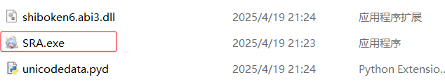
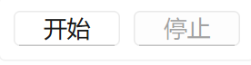
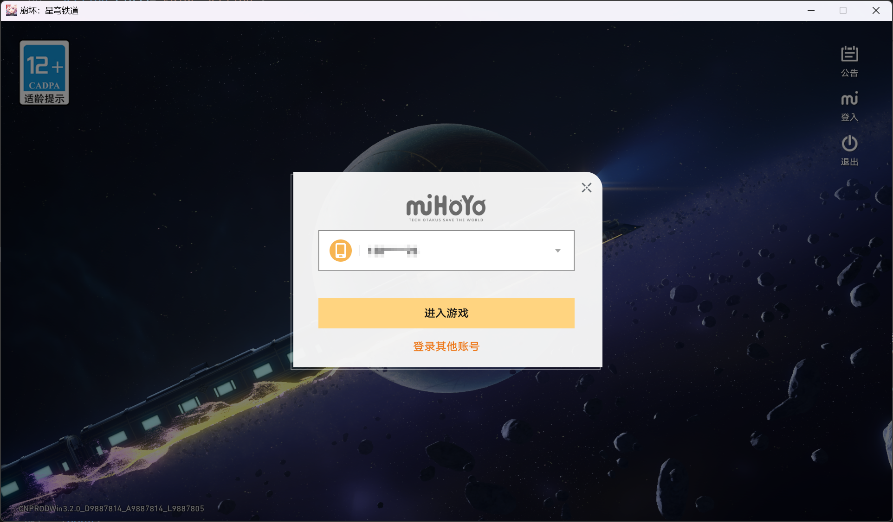

下载
前往 下载页面 选择任意渠道进行下载。
为软件添加信任
SRA含有以下动作：获取管理员权限、读写注册表，容易被杀毒软件认为是病毒而杀掉。
运行软件前，请将 SRA 安装目录、添加入 Windows Defender 排除项以及防病毒软件的信任区或开发者目录， 避免被误杀。以下展示 添加 Windows Defender 排除项 方法：
快速链接：Windows 安全中心
如果链接无效，请手动打开 Windows 安全中心。
若已安装其它杀毒软件，请先打开 定期扫描。

“病毒和威胁防护”设置 > 管理设置

排除项 > 添加或删除排除项

添加排除项 > 选中对应目录

若已安装其它杀毒软件，再次关闭 定期扫描。
注意
即使已经安装其它杀毒软件（如：火绒、360极速版），Windows Defender 防病毒功能仍可能会不定时开启， 这可能导致您的 SRA.exe 突然消失。因此，您必须确保以上目录被 Windows Defender 排除。
安装与启动
SRA采用绿色免安装形式，解压下载的文件，运行 `SRA.exe` 启动程序。
推荐为SRA创建快捷方式，但不要修改源程序的位置。
如果是首次运行，可能需要以管理员身份运行。
启动成功后，将同时弹出公告及主界面。点击确认可关闭公告，点击不再提醒可关闭公告并在直到版本更新的一段时间内不再弹出。

运行前配置
在首次任务前，需要点击上方‘设置’标签页调整SRA设置，包括：
键位设置：如果你更改了键位，比如将活动改成F5，每日实训改成F1。需要在此处同步更改。
屏幕缩放：此项需要调整到你的电脑的实际缩放

其他设置项将在后面介绍。
注意事项
- 确保游戏分辨率为1920*1080。
- 其它分辨率：参见分辨率兼容性列表
- 首次运行时可能需要管理员权限。
任务配置
在主界面的左侧进行任务配置，勾选一个任务代表你启用它
启动游戏
在这个任务中，可以设置渠道（官服/b服）、是否用启动器启动、是否自动登录。 如果使用启动器启动，在下方的文件选择框中选择你的米哈游启动器的路径; 如果不使用启动器，则在下方选择游戏本体的路径。 如果使用错误的文件路径，无法通过路径检查。
有效的路径示例
D:/Star Rail/Game/StarRail.exe
接下来选择是否自动登录，如果启用，必须在输入框内填入内容，当启动游戏时如果游戏处于未登录状态，程序会自动填入你输入的账号密码并登录。 如果不启用，请确保你的游戏处于登录状态。
如果勾选在本地保存密码，账号和密码将以加密的方式存储在本地; 如果不勾选，只会存储账号。
清开拓力
在这个任务中，可以设置是否补充体力、通过何种方式补充、挑战的关卡等。
补充体力：每次补充60点，即取出60后备开拓力或使用一罐燃料或消耗星琼。
对于每类副本，勾选则代表启用，可以设置指定关卡，连战次数、挑战次数等。
可以勾选多类副本。当体力不足而未补充体力时，此后的战斗均不会执行。
仅限0.8.1+
在0.8.1+版本的更新中，清开拓力的功能变的更加自由。
先在左侧选择要刷取的关卡、次数等信息，再点击右侧的“+”按钮，可以看到任务被添加进任务列表。可以双击任务列表中的某一项来删除它。
当SRA执行到清开拓力这一任务时，会按照任务列表从上往下依次执行。
任务列表的内容是可以重复的，他们的顺序取决于你添加的顺序，也可以拖动列表项来修改顺序。
领取奖励
在这个任务中包含了所有的每日奖励，如每日实训，无名勋礼。部分是默认启用的。
还可以领取兑换码奖励，勾选此项，并在兑换码输入框内输入兑换码，可以输入多个兑换码，兑换码之间用空格或换行分隔。
模拟宇宙
目前只支持差分宇宙-周期演算 刷单层，即反复刷取第一层获取等级。
注意：此项不支持与其它任务一同执行，因为它有特殊要求。
要执行差分宇宙任务，首先需要手动进入差分宇宙的主界面，如下图：
务必在此处开始执行，不在此界面将导致无法正常执行。
结束后
此任务用于控制任务结束后的行为，如登出账号、退出SRA、退出游戏、关机或休眠
执行与停止
在左侧最下方有执行按钮，完成任务配置后点击执行开始执行任务
如果想要停止任务，请按停止按钮。开始执行后，在右侧日志区可以观察运行日志。
除了启动游戏和模拟宇宙，其它的任务需要在大世界界面点击开始，否则将导致检测超时。
开始后，SRA会不断操作鼠标，让游戏始终处于前台。此时不建议进行人为干预，除非需要停止任务。
仅限0.8.1+
在0.8.1版本中，任务的开始与停止可以通过快捷键控制，默认为ctrl+shift+alt+s
多账号托管
仅限SRA v0.8.0+
在0.8.0版本中，更新类多账号配置相关功能。
点击上方‘多账号’进入标签页
每个‘配置方案’对应着一个账号的托管方案。
假设将要为A、B、C三个账号托管，对于账号A：
使用默认方案Default，到控制台中勾选需要执行的功能，在使用多账号时，这些功能是必须要勾选的：
- 自动登录（同时填充账号与密码）
- 在本地保存密码
- 退出当前账号
- 模拟宇宙
- 退出游戏
- 退出SRA
- 关机或休眠
完成任务配置后，不是点击开始，而是回到‘多账号’页，点击‘保存当前配置到此方案’，此时账号A的托管方案就配置完成并保存了。
对于账号B：
选择‘新建方案’，输入一个方案名称，例如‘planB’；点击‘当前方案’右侧选框，可以看到我们新建的planB，选中它，接下来像配置刚才的方案那样配置planB即可。记得保存方案。
如果你的账号B与A的托管计划完全相同，可直接点击‘将当前配置另存为新方案’，即可复制一份方案，不过记得修改这份方案的账号与密码。
对于账号C：同上。
现在我们有了三份方案，分别为Default、planB、planC，在‘多账号’页面勾选‘当前方案结束时切换下一个方案’，准备开始多账号托管。
为了使多账号托管按预期运行，建议先运行游戏并退出当前登录的账号，进入下面的界面：
回到SRA，点击‘开始’，即可开始一趟多账号托管之旅。
拓展功能
点击上方‘拓展功能’进入标签页
此页的功能与其他页面的任务独立，功能勾选后会立即执行，如果要取消执行请取消勾选。
自动对话：开启后在进入剧情时会自动播放对话、自动选择对话选项。此功能不会控制鼠标，但是会让游戏处于前台。如果需要取消执行，尝试将游戏最小化后回到此页面取消勾选。
穷观阵：这是一个第三方插件，需要下载才能使用（大约20MB），主要功能为占卜及AI解卦。当前仅有部分基础功能。
项目地址在0.8.1+已移除。
设置
点击上方‘设置’进入标签页
开机自启动：勾选此项时，SRA会在你的电脑启动时启动。
自动更新：勾选此项时，SRA会在启动时检查有无版本更新（依赖于SRA更新器），也可以通过取消勾选再勾选来手动检查一次更新。关闭此服务后，公告栏中的内容也不会再更新。
线程安全：勾选此项时，在点击按钮后SRA会等待当前任务结束后再停止，而不是立即停止。通常不建议勾选此项。
清空日志：点击此项时，会清空日志文件SRAlog.log中的内容。在0.8.1+已废弃。
识图置信度：此项的值代表在执行任务中图像识别的置信度，置信度越高表面对两幅图片的相似度要求越高，此数值为0.01~0.99间的任意值。建议保持为0.90。
MirrorChyanCDK：
仅限0.8.0+
如果你购买了mirror酱的CDK，将它填写到此处，更新时将使用mirror酱提供的下载加速服务。
文件完整性检查：点击此按钮后将立即进行一次文件完整性检查（依赖于SRA更新器），SRA可能会被退出。
仅限0.8.1+
热键设置：此处修改全局热键，你可以在任何地方按下快捷键来执行这些操作。
通知

允许通知：这是通知的总开关
系统通知：启用此项后，当SRA发送通知时，会发送一个系统通知。
邮件通知：启用此项后，当SRA发送通知时，会发送一个邮件通知。需要先配置好SMTP服务并点击验证按钮。 详见邮件通知
关闭窗口时直接退出：在0.8.1中，SRA增加了一个系统托盘，与此同时，当你点击关闭按钮时仅会关闭窗口，而不会结束SRA的进程。启用此项后点击关闭按钮时会同时停止SRA的进程。
更新
SRA所有的下载及更新服务都集成于SRA更新器（SRAUpdater），如果你缺失了这个文件，前往下载页面来下载它。
双击运行更新器，更新器就会进行一次正常更新流程。在下载时，可以通过Ctrl+C取消下载。
更新器也支持使用命令行参数启动，下面是一些参数解释
SRAUpdater -h
用于查看帮助信息
SRAUpdater -u URL
指定下载文件url。是的，SRA更新器不止能用来更新SRA，也可以借助它下载任何其他文件，只需将URL替换为需要下载的文件链接。
SRAUpdater -p PROXY
指定下载代理。如果你有自己的代理网站，使用此参数来设置它，只需将PROXY替换为你的代理网站。
SRAUpdater -np
禁用代理。np不是no problem，而是no proxy。如果你要下载的文件不需要经过代理，或者要使用加速器下载，使用此参数来关闭代理。
SRAUpdater -nv
禁用SSL证书验证。当使用加速器下载时，除了需要使用上面的-np参数，还有可能遇到SSL证书验证失败，此时使用此参数关闭SSL证书认证来完成下载。
SRAUpdater -f
强制更新。也许由于种种原因你的SRA处于旧的版本，但更新器却说这是最新版本（这通常是由于version文件错误导致的）。使用此参数来进行一次强制更新，即无论是否是最新版本，都下载一次最新版本。
SRAUpdater -i
进行文件完整性检查。此参数会检测SRA的所有文件是否是最新的。如果有则准备下载。
SRAUpdater -vb
显示完整的日志信息。通常与其他参数混合使用，输出更完整的日志。
SRAUpdater -v
显示当前版本信息。
SRAUpdater -timeout
设置请求超时时间。
邮件通知
仅限0.8.1+
在0.8.1版本中，更新了邮件通知功能。
在设置中，勾选‘邮件通知’，并在下方配置SMTP服务并点击验证。
SMTP 是一种可靠有效的电子邮件传输协议，SRA 使用 SMTP-SSL 推送电子邮件通知。
SMTP 服务器地址
请根据发信邮箱的电子邮件服务提供商选择正确的 SMTP 服务器地址。
| 电子邮件服务提供商 | SMTP 服务器地址 |
|---|---|
| QQ邮箱 | smtp.qq.com |
| 163邮箱 | smtp.163.com |
| Gmail | smtp.gmail.com |
| Outlook/Hotmail | smtp-mail.outlook.com |
| Yahoo Mail | smtp.mail.yahoo.com |
若未找到您使用的电子邮件服务，请访问该邮件服务的帮助中心或搜索其 SMTP 服务器地址。
获取授权码
授权码 是用于替代您的邮箱密码进行第三方客户端登录的一种特殊密码，您需要填写发信邮箱的授权码。常见邮件服务商授权码的一般获取步骤如下：
-
QQ 邮箱
QQ邮箱官方教程- 登录到您的QQ 邮箱账号与安全中心。
- 在 账号与安全 > 安全设置 > SMTP/IMAP服务 中开启服务并获取授权码。
-
163 邮箱
163邮箱官方教程- 登录到您的163 邮箱账号。
- 进入 设置 > POP3/SMTP/IMAP，找到 IMAP/SMTP服务 并点击开启。
- 在弹窗中点击 继续开启，根据指示在手机中发送短信。
- 弹窗生成 授权密码，该密码便为您的授权码。
-
Gmail
- 登录到您的 Gmail。
- 进入 设置 > 查看所有设置 > 转发和 POP/IMAP > IMAP 访问，选择 启用 IMAP。
- 进入 用户 > 管理您的 Google 账号 > 安全性 > 两步验证，按提示开启 两步验证。
- 进入 两步验证 > 应用专用密码，按提示创建 应用专用密码，该密码便为您的授权码。
-
Outlook/Hotmail
- 登录到您的 Outlook 账户。
- 进入 我的账户 > 安全和隐私 > 更多安全选项。
- 在 应用程序密码 中创建应用程序密码。
-
Yahoo Mail
- 登录到您的 Yahoo 账户。
- 进入 账户 > 安全 > 应用程序密码。
- 点击 生成应用程序密码 以创建应用程序密码。
注意
- 为了您的信息安全，请勿将授权码告诉他人，并定期更换。
- 部分邮箱的授权码仅显示一次，请及时保存；部分邮箱的授权码存在有效期，请在到期前及时更换。
- SRA 已对本地授权码数据使用 Windows DPAPI 加密，这种加密方式将当前用户的登录凭据作为加密密钥的一部分，这意味着只有同一个用户在同一台计算机上才能解密数据。如果您需要跨设备迁移配置文件，请重新输入授权码。
- SMTP 邮件推送服务允许发信邮箱与收信邮箱相同，若没有多余的电子邮箱，可以填写相同的发信邮箱与收信邮箱地址。
调试模式
仅限0.8.1+
在0.8.1版本中，更新了调试模式功能。
如果你迫切地想要知道SRA当下正在做什么，为什么看起来没反应？使用命令行启动SRA!
-
调试模式
- 打开SRA的文件夹
- 在地址栏中输入 cmd 或 powershell 来打开一个工作目录为SRA文件夹的终端。
- 在终端中输入 SRA 或 .\SRA
此时SRA将以调试模式启动，你可以在终端中看到SRA包括debug等级在内的所有日志。
此时如果关闭终端，SRA也会一同关闭。
SRA命令行
仅限0.8.2+ 推荐有部分基础的用户使用此功能
在0.8.2版本中，更新了SRA命令行功能。
如果你觉得图形化用户界面太丑，或者觉得SRA内存占用过高，尝试使用SRA命令行！
以管理员身份运行终端，并cd进入SRA的文件夹
输入 SRA --cli 或.\SRA --cli 来启动SRA命令行
最好先输入 exit 并按下两次 Enter 来退出 Windows 的终端，不然你可能看见 SRA 和终端交替运行。
一切准备就绪，输入 help 或 ? 可以查看帮助信息

目前 SRA 命令行仅可查看配置文件而不可修改。如果要进行配置操作，还请使用GUI。
输入 run 可以以指定的配置运行，如果不指定配置，将使用 Default (config 命令同理)
例如: run Default other...
注意：这将是线程阻塞的，你无法在任务结束前执行其它命令。在任何时候，如果你想要停止任务，请按下 Ctrl+C

再次输入 exit 并按下 Enter 可以退出SRA命令行。
另一种方式：
如果你使用SRA命令行只是为了执行任务，或者你只想直接执行任务不使用SRA命令行。请以管理员身份运行终端，并cd进入SRA的文件夹
输入 SRA --run [config] [...] 即可直接开始执行任务。
例如: SRA --run Default other...
注意：这将是线程阻塞的，你无法在任务结束前执行其它命令。在任何时候，如果你想要停止任务，请按下 Ctrl+C